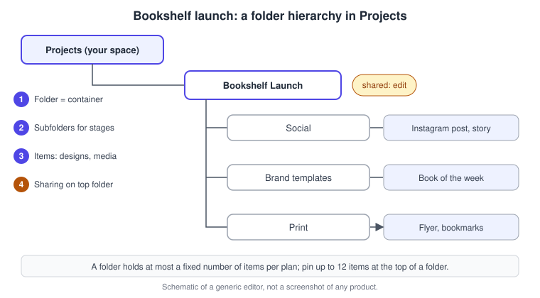
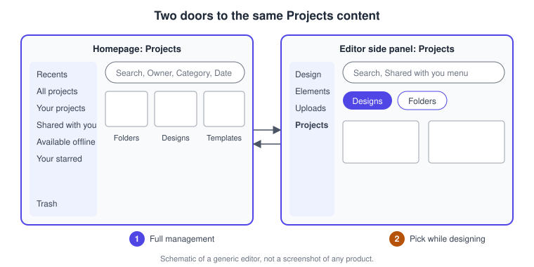
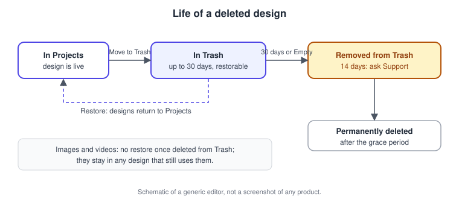
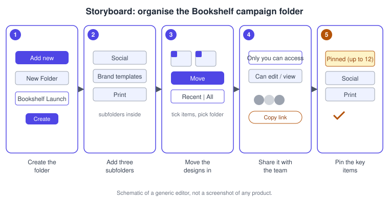

Projects, Folders and File Management
|
This content was generated with the assistance of AI and should be verified against the official documentation before being relied on in production. |
This page was checked against the official Canva Help Center and the Canva Developers documentation on 2026-11-07. It covers Projects, the place where Canva keeps every design, folder, Brand Template and uploaded file that you own or that has been shared with you, in the Canva website, the desktop app and the mobile app. Everything here is generally available; none of it depends on an AI tier. Folders, starring, renaming, duplicating and Trash work on every plan (Free, Pro, Business, Enterprise, Education and Nonprofits); the differences are in capacity and in the team-level controls. A folder holds up to 200 items on a Free account and up to 5000 items on Pro, Teams, Education and Nonprofits accounts, according to the Help Center article on creating folders. Smart Tags, team starring and ownership transfer are limited to paid or team-type plans, as explained in the relevant sections. Business replaced Teams for new sign-ups on 2025-10-30, while several Help Center articles still use the name Teams for the same team-level capabilities, so check the wording on your own account. Plans and prices change; see Canva pricing and Plans, Pricing and AI Allowance.
The running example is the Bookshelf launch campaign, the book catalogue and reading-list app introduced in the Figma sub-section. By the end of this page the campaign has its own shared folder, with subfolders for social, brand templates and print, pinned key items, tags for search, a cleaned-up Trash and a clear owner. The other pages build the content that goes into the folders: Uploads, Stock Media and Imports, Sharing and Permissions and Brand Templates, Controls and Approvals.
What Projects is
Every design you create is saved automatically and appears in Projects. Projects is not a file system on your computer: there is no "Save as" and no path to a file. A design is an object in your account (or in the team it belongs to), and folders are labels you use to group such objects. The items in Projects are:
-
Designs: documents, presentations, videos, whiteboards, websites, sheets and so on, whatever their type.
-
Folders and subfolders: containers that you can nest.
-
Brand Templates: templates published for reuse, which are listed beside designs and folders.
-
Uploads: images, videos, audio, fonts and other files that you uploaded (the Help Center also describes ZIP, INDD, HTML and Affinity files stored as originals).
-
Elements and other media that you add to a folder from the Elements tab.
Designs belong to the team or personal space where they were created, not to a folder: moving a design to a folder changes where you find it, not who owns it. If you leave a team, are removed from it or the team is deleted, you lose access to the designs of that team along with it, which is the most common cause of "missing" designs and the reason the ownership-transfer section below matters.
The hierarchy that the Bookshelf campaign ends up with is shown below: one top folder shared with the team, one subfolder per production stage, and the designs inside.

Where Projects lives
Projects appears in two places that show the same content with different emphasis.

-
On the homepage, open Projects from the side panel (or from More if the list is collapsed). The side list offers Recents, All projects, Your projects, Shared with you, Available offline, Your starred and Trash. This is the place for full management: bulk selection, moving, sharing and emptying Trash.
-
In the editor, the side panel has a Projects tab with Designs and Folders sub-tabs, a search field and a menu that switches between your projects and content shared with you. This is the place to open another design, drop a design into a folder or star something without leaving the document.
The All projects view on the homepage shows Folders, Designs and Brand Templates by default. Images, videos and other uploads are not deleted or hidden permanently; they simply need the search bar or the Type filter. The default view does not apply in the editor, where All projects still shows every item type. This default is a recent change that older guides do not mention, and it is a common reason people believe that their uploads disappeared.
Finding, filtering and sorting
Search starts from the homepage search bar: type simple keywords, a category or a concept, choose Search and then See all. In the results you can refine:
| Control | What it does |
|---|---|
Owner |
Any owner, Owned by others, you (labelled You), or a specific person found with Search people |
Category |
Restricts results to a design type, for example Instagram post or Presentation |
Date modified |
Restricts results to a time range |
Clear filters |
The icon at the start of the filter row resets every filter at once |
Sort |
When scoped to All your content: most relevant, date edited or name |
Filtering can hide results that you expect to see, so when a design seems to be missing, check the filters first. Inside a folder there is a second, local set of controls that work on that folder only: a Search folder field that matches titles, a Type filter (Any type, Folders, Designs, Brand Template, Images, Videos, Files), a Sort control (Newest edited, Oldest created, Name A to Z) and a switch between Grid view and List view.
Recents lists the designs and Brand Templates you opened recently, but not folders. When something is really missing, the Help Center suggests, in order: Recents, then Projects with search, sort by most recently edited and the Owner filter; then another sign-in method or email (work and personal accounts are separate); then the team switcher in the profile menu; then Notifications for an admin move; then Trash; and finally the Shared with you list. Content someone else shared with you never appears under Your projects.
Creating and managing folders
A folder is created from the homepage: Projects, Add new, New Folder, a name, then Create folder. The number of folders is unlimited. On Pro, Teams, Education and Nonprofits accounts you can also create folders from the Folders tab inside the editor. Folders can contain subfolders, designs, Brand Templates, images, videos and files; each folder has a capacity (200 items on Free, 5000 on Pro, Teams, Education and Nonprofits), which you should keep in mind for a folder that collects every campaign asset.
Folder actions depend on your role in the folder and are summarised in the following table, as documented on 2026-11-07.
| Action | Who can do it | Notes |
|---|---|---|
Rename |
The folder owner, and people who were given edit access |
The name is visible to everyone with access |
Move |
The owner, or someone with edit and share access; also a team owner or admin with at least View access |
The destination folder needs at least edit access |
Share |
The owner, and people with edit and share access |
Shares with the whole team or selected people |
Copy link |
Anyone who can share |
The folder must already be shared, otherwise the link does not open |
Delete |
The owner, and a team owner or admin with at least View access |
Only a folder that contains no subfolders can be deleted, and a folder deletion is described as permanent |
Make a copy |
Anyone with at least View access, within the same team |
Copying to another team is for administrators unless a setting changes it |
Bulk actions are available: hover over several folders, tick the checkbox that appears, then use the Folder icon at the bottom of the page to move them or the trash icon to delete them. Because a folder deletion cannot be undone and a folder with subfolders cannot be deleted directly, empty or move the subfolders first, and check what the folder holds before deleting it.
Source: Canva Help Center: Create folders and Canva Help Center: Rename, move, share, and delete folders
Working with the contents of a folder
You can only move items to and from folders that you created, own or can edit. Team owners and admins with at least View access can move and delete items too. You cannot move a design into a folder when the design is shared from a different team, or when you are not a member of that team.
To move items, select them with the checkbox on each thumbnail, choose Move, and then pick a destination. The Recent tab lists folders used lately, the All tab lists every folder you own or can access, and the Create new option under Your Projects makes a new folder on the spot (Move to new folder confirms). Brand Templates cannot be copied this way. Dragging a thumbnail onto a folder also works.
Selecting many items is faster with these methods, available on the desktop app and the web but not on mobile:
| Task | macOS | Windows |
|---|---|---|
Select all visible items (after ticking the first checkbox) |
Cmd A |
Ctrl A |
Select a range (tick the first item, then click the last) |
Shift click |
Shift click |
Extend the selection |
Shift and the arrow keys |
Shift and the arrow keys |
Drag selection |
Drag a box over empty space |
Drag a box over empty space |
Close a full-screen file preview |
Esc |
Esc |
Selecting an image, a video or an Affinity file opens a full-screen preview with the file name, size and upload date and quick actions (Rename, Move, Download, Open in editor); arrow keys move between items. Other file types, such as ZIP, INDD or HTML, show only a thumbnail icon. To take an item out of a folder without deleting it, open its menu (or right-click) and choose Remove from folder; Move to Trash is the separate, destructive choice.
Sharing a folder
Sharing a folder gives people the same access to every item in it, which is why one shared campaign folder is easier to maintain than sharing each design on its own. Open the folder and choose Share, or use the folder’s More menu. The access list starts at "Only you can access"; choose an access option, search for a person or group under People with access, pick Can edit or Can view, and then Copy link. Setting the permission back to Not shared stops sharing. Profile pictures under a design or folder show whether it is shared: none means private, two or more means shared, and a plus on the second picture means more than one other person or team has access. Clicking a picture lists who has access.
A folder can only be shared with teams you belong to or people in your team, so invite a colleague to the team first. A team admin may also restrict design sharing, which prevents sharing with some people. A link opens the folder only for people who already have access. Personal folders are private by default; keep important assets in shared folders so that teammates can find them. The wider rules for design sharing, roles and links are in Sharing and Permissions.
Folder Brand Controls
A team can attach a Brand Kit to a folder so that every design in it follows that kit. Once font or colour controls are switched on for a folder, designs in it are locked to the assigned Brand Kit and a different kit cannot be chosen from the editor; the controls on a folder override team-level controls for designs in that folder. The first activation can take up to an hour. This is available to administrators, teachers and brand designers on the eligible subscriptions, not to every member. See Brand Templates, Controls and Approvals.
Pinning, starring and tags
Three different features mark important content, and they are often confused.
| Feature | What it does | Who sees it |
|---|---|---|
Pin to folder |
Puts an item at the top of a folder in a Pinned section; up to 12 items per folder |
Everyone with access to the folder; only the owner or people with edit and share access can pin and unpin |
Star for you (Your starred) |
Adds a design, folder or Brand Template to Your starred in the side navigation, with custom sections you can create, rename, delete and reorder |
Only you |
Star for team |
Highlights content for the whole team or school |
Team members who already have access; only team owners, administrators or brand designers can star or unstar |
Moving a pinned item to another folder unpins it, and you must pin it again in its new folder; moving a folder that contains pinned items does not change the pins. Starring a design is done from the Star icon on its thumbnail (or More, Star for you), or by dragging the design under Your starred; starred items appear directly below Available offline in the left navigation. On mobile, custom sections can be renamed and deleted but not created or filled, and the Starred tab is not shown on the mobile Home screen (open a design and use the editor instead). Team starring is documented for Teams, Enterprise and Education accounts.
Tags are searchable labels on designs, images and videos. You add them from More, Details, Add tags (press Enter after each tag) on the homepage, or from the editor’s Projects or Uploads tabs. Smart Tags are suggested by AI for images (not for videos or designs) and can be edited or removed. The Help Center describes tags as available to Pro, Teams, Nonprofits and Education accounts; confirm on your own account whether Business shows the Details panel, because the article predates the Business plan.
Renaming and duplicating
Rename a design in the editor by clicking its title in the toolbar, typing the new title and pressing Enter; on the homepage, select the title under the thumbnail next to the pencil icon. If the title is hidden in the editor toolbar, change the browser zoom level, because a narrow window drops it. Rename needs edit access to the design or the folder.
To duplicate, choose Make a copy from the thumbnail’s More menu in Projects (the copy appears in the same folder) or from File, Make a copy in the editor (the copy opens in a new tab). A copy is a separate design: later edits to the original do not reach it and its version history starts fresh. Copies are useful for keeping an original before sharing it for editing, or when a design is shared with you and you want your own editable version. Canva recommends duplicating only when needed and naming versions clearly, and using Version history to track changes instead of piling up copies (see Collaboration, Comments and Version History).
Trash and recovery
Moving a design to Trash is not deletion. Trash has two clocks that older guides do not describe:
-
A design stays in Trash for up to 30 days and can be restored at any time in that window.
-
When it leaves Trash (automatically after 30 days or because you used Delete or Empty Trash), a 14-day grace period begins in which you can contact Support to ask for a restore, if possible.
-
After the 14 days the design is permanently deleted and cannot be recovered.

Images and videos behave differently: once deleted from Trash they cannot be restored at all, although an image or video that is still used in a design is not fully deleted until that design is removed. The Empty Trash button appears only while Trash contains items and deletes everything at once; the Designs, Images, Videos and Files tabs let you restore or delete selected items. Restored designs return to Projects and restored images and videos return to Uploads. When a whole team is deleted, its designs, folders, uploads, groups and apps are scheduled for permanent deletion after 14 days, during which the team owner can restore it.
Trash is only for fully deleted items. If the design still exists but recent changes are gone, use Version History rather than Trash. Because an image can still be downloaded from a design that contains it after the upload was deleted (right-click the image and choose Download selection), a deleted upload is not always lost.
Ownership transfer and bulk data download
Ownership transfer keeps a team’s content available when a member is removed. It is available to owners and admins of Teams, Business and Enterprise accounts; Education supports it only through district team admins, and only when a member is removed (content of someone who leaves on their own cannot be transferred). All folders, designs, templates, videos, audio, media uploads and shared content owned by the removed person are included, with their sharing permissions, while comments, activity history and content they merely accessed are not. Transferred content appears in Projects in a folder named after the former owner (From, followed by the name). The previous owner loses access unless the new owner shares the content again. The setting is on by default for teams created on or after 2026-06-01; for earlier teams enable it under Settings, Controls. The transfer cannot be undone and can take over 30 minutes for large amounts of content.
Bulk download exports your personal data, uploaded images, videos, fonts and designs as ZIP files. It is available on desktop only, and in a team only the team owner can download team uploads and designs. Request it under Settings, Account and security, Download your Canva uploads and designs; after requesting it you cannot delete your account until it completes. Canva emails you when the files are ready, which can take 24 to 72 hours; the download link works for 14 days, and any missing designs should be reported to Support within those 14 days.
Uploads and storage limits
Uploaded files live in the Uploads folder under All projects, and in the editor’s Uploads tab. Storage limits, as listed by the Help Center, are 5 GB for Free, 100 GB for Pro, 500 GB per team for Business and 1 to 5 TB per team for Enterprise. Every uploaded file counts against the limit, including files that Canva converts into a design. Files such as ZIP, INDD and HTML are kept as originals that you can organise, download and share but not open in the editor; PDF, PPTX and CSV uploads are converted into Canva designs and the original is not kept. Supported formats and size limits are in Uploads, Stock Media and Imports. Do not rely on Canva as the only archive of a source file, because a converted file cannot be downloaded in its original form.
Desktop, mobile and offline
The desktop app and the website behave the same for Projects. The mobile apps support browsing, starring, renaming, moving and the trash, but some management tasks are desktop-only: bulk download of uploads and designs, creating and filling custom starred sections, and the multi-select shortcuts. In the desktop app, Cmd T (macOS) creates a new design in a new tab, Cmd Shift H opens the Home page and Cmd W closes the current tab; on Windows use Ctrl in place of Cmd.
Available offline is the offline entry in Projects. You must enable each design for offline use while connected, from More, Make available offline, or from the editor; offline designs are stored per device, only existing designs can be edited, signing out removes them and videos show as static images until you reconnect. Offline editing is supported in Chrome, Edge and Safari on desktop, in the desktop app and on Android, but not in the iOS and iPad apps or in private browsing. The Help Center states the maximum offline period differently in two articles (7 and 14 days), so treat it as a short period and sync as soon as you reconnect. Manage storage under Settings, Data and storage, Offline, where Remove offline designs and Delete all offline data are separate choices, and neither deletes the designs from your account. See Desktop, Mobile and Offline.
Folders from code
The Canva Developers platform exposes folders to apps and integrations. The REST APIs offer create, get, update and delete folder, list folder items and move a folder item between folders, and the Folders platform concept describes how an app works with the user’s Projects. Calls act with the permissions of the connected user, so an integration can file generated designs in a campaign folder, as the Bookshelf Covers app does in REST APIs and the Connect API. Authentication uses CANVA_CLIENT_ID and CANVA_CLIENT_SECRET read from the environment, never values written into source.
Procedure: organise the Bookshelf campaign folder
The goal is a single shared folder that holds everything for the launch, with predictable subfolders and the key assets within reach.

-
On the homepage select Projects, then Add new, New Folder. Name it Bookshelf Launch (a name with the project, not "New folder") and select Create folder.
-
Open the folder, choose Add new, New Folder three more times to create Social, Brand templates and Print. Subfolders can hold the Instagram post and story, the "Book of the week" template and the flyer respectively.
-
Back in All projects, tick the checkbox on each Bookshelf design (or drag a selection box over them), choose Move, pick the target subfolder on the All tab and select Move. Use Create new under Your Projects if a folder is missing.
-
Open the Bookshelf Launch folder, choose Share, pick the team in the access list, set Can edit for designers and Can view for reviewers, and use Copy link to send it to the team. Check the profile pictures under the folder: two or more mean it is shared.
-
Hover over the Instagram post, select More, then Pin to folder, and do the same for the brand template. They now sit in the Pinned section at the top. Star the folder for yourself so it appears under Your starred.
-
Rename duplicates such as "Copy of Instagram post" to "Bookshelf IG post v2" by selecting the title under the thumbnail, typing and pressing Enter.
Procedure: recover a deleted design
-
On the homepage select Projects and then Trash at the bottom of the side panel.
-
Open the Designs tab, tick the "Bookshelf IG post v2" thumbnail and select Restore in the action bar. Confirm when prompted.
-
Open Projects: the design is back, though you may need to move it again to its subfolder.
-
If the design is no longer in Trash, contact Support within 14 days of its removal from Trash. Do not choose Empty Trash while looking for something else.
Common pitfalls
-
Treating a folder as a copy: a design is in one place, so deleting a folder or moving the design removes it from the others who rely on that location.
-
Deleting a folder that other people use. A folder deletion is permanent and the deleted contents leave the shared space for everyone, so check sharing first.
-
Searching with leftover filters and concluding that a design is lost; clear the filter row and check the Owner filter.
-
Looking under Your projects for something that was shared with you, which lives under Shared with you.
-
Expecting an uploaded PDF, PPTX or CSV to be recoverable as an original file; it is converted and the original is not stored.
-
Assuming Trash keeps everything: images and videos cannot be restored once deleted from Trash.
-
Leaving the team with work in your name, which makes it unreachable; admins should transfer ownership before removing someone.
-
Hitting the folder limit (200 items on Free) because every campaign asset was dumped in one folder; use subfolders.
Where older guides are outdated
| Older guidance | Current behaviour | Checked |
|---|---|---|
Three tiers: Free, Pro and Teams |
Business replaced Teams for new sign-ups on 2025-10-30; Enterprise, Education and Nonprofits also exist, and capacity limits differ by plan |
2026-11-07 |
Deleted designs are lost or simply "in the trash" |
Trash holds designs for 30 days, followed by a 14-day Support window; images and videos cannot be restored after leaving Trash |
2026-11-07 |
All projects shows everything |
On the homepage it shows folders, designs and Brand Templates by default; other uploads need search or the Type filter |
2026-11-07 |
Folders are only a personal tidy-up tool |
Folders can be shared, carry pinned items, have Brand Controls and are managed through a Folders API |
2026-11-07 |
A leaving member takes their designs with them |
Designs are owned by the team; admins can transfer ownership of the content when removing a member |
2026-11-07 |
Uploads and designs can only be downloaded one by one |
A bulk ZIP export of uploads and designs is available on desktop through account settings |
2026-11-07 |
References
-
Canva Help Center: Brand Controls for designs inside folders
-
Canva Help Center: Star your favorite designs, folders and Brand templates
-
Canva Help Center: Add tags to your images, videos and designs
-
Canva Help Center: Restore or delete designs and files from Trash
-
Canva Help Center: Downloading your personal data, uploads, and designs in bulk